Chapter 9 Regression
9.1 Seminar
In this section, we will cover regression models. We will first introduce the bivariate linear regression model. We will then move to linear models with multiple independent variables. Next, we discuss counfounders as threats to our inference. Finally, we will introduce the logistic regression model.
First, however, we install a new pacakge called texreg which makes it easy to produce publication quality output from our regression models. We’ll discuss this package in more detail as we go along. For now let’s install the package with the install.packages("texreg") function and then load it using library(texreg).
install.packages("texreg")
library(texreg)We will use a dataset collected by the US census bureau that contains several socioeconomic indicators.
communities <- read.csv("communities.csv")The dataset includes 38 variables but we’re only interested in a handful at the moment.
| Variable | Description |
|---|---|
| PctUnemployed | proportion of citizens in each community who are unemployed |
| PctNotHSGrad | proportion of citizens in each community who failed to finish high-school |
| population | proportion of adult population living in cities |
PctUnemployed PctNotHSGrad population
1 0.27 0.18 0.19
2 0.27 0.24 0.00
3 0.36 0.43 0.00
4 0.33 0.25 0.04
5 0.12 0.30 0.01
6 0.10 0.12 0.02If we summarize these variables with the summary() function, we will see that they are both measured as proportions (they vary between 0 and 1):
summary(communities$PctUnemployed) Min. 1st Qu. Median Mean 3rd Qu. Max.
0.0000 0.2200 0.3200 0.3635 0.4800 1.0000 summary(communities$PctNotHSGrad) Min. 1st Qu. Median Mean 3rd Qu. Max.
0.0000 0.2300 0.3600 0.3833 0.5100 1.0000 It will be a little easier to interpret the regression output if we convert these to percentages rather than proportions. We can do this with the following lines of code:
communities$PctUnemployed <- communities$PctUnemployed * 100
communities$PctNotHSGrad <- communities$PctNotHSGrad * 100We can begin by drawing a scatterplot with the percentage of unemployed people on the y-axis and the percentage of adults without high-school education on the x-axis.
plot(
x = communities$PctNotHSGrad,
y = communities$PctUnemployed,
xlab = "Adults without high school education (%)",
ylab = "Unemployment (%)",
frame.plot = FALSE,
pch = 20,
col = "LightSkyBlue"
)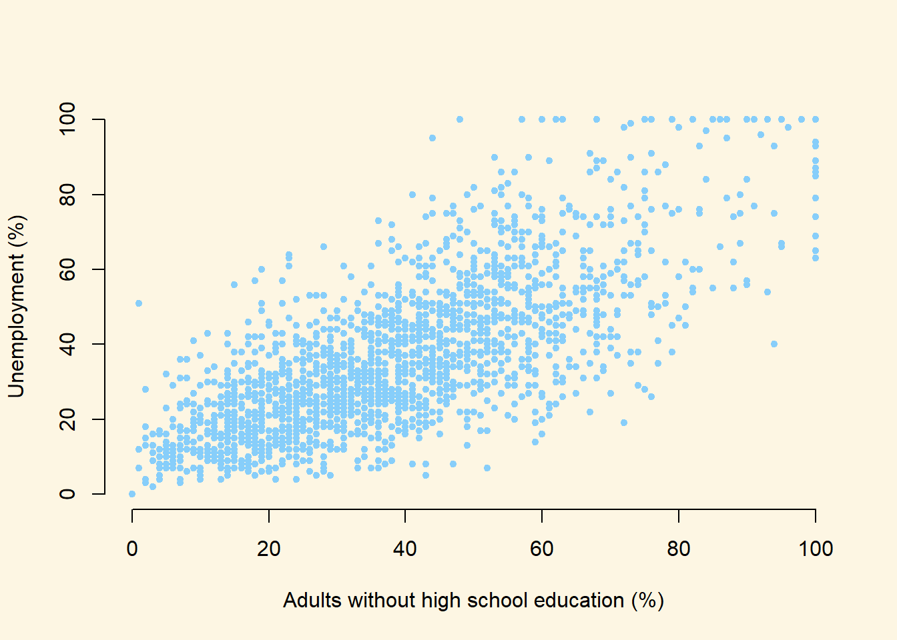
From looking at the plot, what is the association between the unemployment rate and lack of high-school level education?
In order to answer that question empirically, we will run a linear regression using the lm() function in R. The lm() function needs to know a) the relationship we’re trying to model and b) the dataset for our observations. The two arguments we need to provide to the lm() function are described below.
| Argument | Description |
|---|---|
formula |
The formula describes the relationship between the dependent and independent variables, for example dependent.variable ~ independent.variable In our case, we’d like to model the relationship using the formula: PctUnemployed ~ PctNotHSGrad |
data |
This is simply the name of the dataset that contains the variable of interest. In our case, this is the merged dataset called communities. |
For more information on how the lm() function works, type help(lm) in R.
model1 <- lm(PctUnemployed ~ PctNotHSGrad, data = communities)9.1.1 Interpreting Regression Output
The lm() function has modeled the relationship between PctUnemployed and PctNotHSGrad and we’ve saved it in an object called model1. Let’s use the summary() function to see what this linear model looks like.
summary(model1)The output from summary() might seem overwhelming at first so let’s break it down one item at a time.

| # | Item | Description |
|---|---|---|
| 1 | formula | The formula describes the relationship between the dependent and independent variables |
| 2 | residuals | The differences between the observed values and the predicted values are called residuals. |
| 3 | coefficients | The coefficients for all the independent variables and the intercept. Using the coefficients we can write down the relationship between the dependent and the independent variables as: PctUnemployed = 7.8952023 + ( 0.7423853 * PctNotHSGrad ) This tells us that for each unit increase in the variable PctNotHSGrad, the PctUnemployed increases by 0.7423853. |
| 4 | standard error | The standard error estimates the standard deviation of the sampling distribution of the coefficients in our model. We can think of the standard error as the measure of precision for the estimated coefficients. |
| 5 | t-statistic | The t-statistic is obtained by dividing the coefficients by the standard error. |
| 6 | p-value | The p-value for each of the coefficients in the model. Recall that according to the null hypotheses, the value of the coefficient of interest is zero. The p-value tells us whether can can reject the null hypotheses or not. |
| 7 | \(R^2\) and adj-\(R^2\) | tell us how much of the variance in our model is accounted for by the independent variable. The adjusted \(R^2\) is always smaller than \(R^2\) as it takes into account the number of independent variables and degrees of freedom. |
Now let’s add a regression line to the scatter plot using the abline() function.
First we run the same plot() function as before, then we overlay a line with abline():
plot(
x = communities$PctNotHSGrad,
y = communities$PctUnemployed,
xlab = "Adults without high school education (%)",
ylab = "Unemployment (%)",
frame.plot = FALSE,
pch = 20,
col = "LightSkyBlue"
)
abline(model1, lwd = 3, col = "red")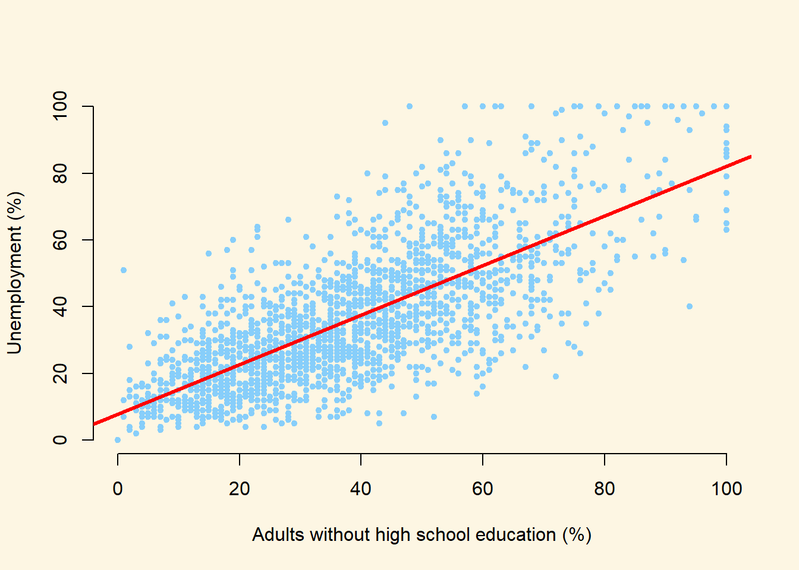
We can see by looking at the regression line that it matches the coefficients we estimated above. For example, when PctNotHSGrad is equal to zero (i.e. where the line intersects the Y-axis), the predicted value for PctUnemployed seems to be above 0 but below 10. This is good, as the intercept coefficient we estimated in the regression was 7.8952023.
Similarly, the coefficient for the variable PctNotHSGrad was estimated to be 0.7423853, which implies that a one point increase in the percentage of citizens with no high-school education is associated with about 0.7423853 of a point increase in the percentage of citizens who are unemployed. The line in the plot seems to reflect this: it is upward sloping, so that higher levels of the no high-school variable are associated with higher levels of unemployment, but the relationship is not quite 1-to-1. That is, for each additional percentage point of citzens without high school education, the percentage of citizens who are unemployed increases by a little less than one point.
While the summary() function provides a slew of information about a fitted regression model, we often need to present our findings in easy to read tables similar to what you see in journal publications. The texreg package we loaded earlier allows us to do just that.
Let’s take a look at how to display the output of a regression model on the screen using the screenreg() function from texreg.
screenreg(model1)
=========================
Model 1
-------------------------
(Intercept) 7.90 ***
(0.65)
PctNotHSGrad 0.74 ***
(0.01)
-------------------------
R^2 0.55
Adj. R^2 0.55
Num. obs. 1994
RMSE 13.52
=========================
*** p < 0.001, ** p < 0.01, * p < 0.05Here, the output includes some of the most salient details we need for interpretation. We can see the coefficient for the PctNotHSGrad variable, and the estimated coefficient for the intercept. Below these numbers, in brackets, we can see the standard errors. The table also reports the \(R^2\), the adjusted \(R^2\), the number of observations (\(n\)) and the root-mean-squared-error (\(RMSE\)).
One thing to note is that the table does not include either t-statistics or p-values for the estimated coefficents. Instead, the table employs a common device of using stars to denote whether a variable is statistically significant at a given alpha level.
***indicates that the coefficient is significant at the 99.9% confidence level (alpha = 0.001)**indicates that the coefficient is significant at the 99% confidence level (alpha = 0.01)*indicates that the coefficient is significant at the 95% confidence level (alpha = 0.05)
Returning to our example, are there other variables that might affect the unemployment rate in our dataset? For example, is the unemployment rate higher in rural areas? To answer this question, we can swap PctNotHSGrad for a different independent variable. Let’s use the variable population, which measures the proportion of adults who live in cities (rather than rural areas). Again, we can transform this proportion to a percentage with the following code:
communities$population <- communities$population * 100Let’s fit a linear model using population as the independent variable:
model2 <- lm(PctUnemployed ~ population, data = communities)
summary(model2)
Call:
lm(formula = PctUnemployed ~ population, data = communities)
Residuals:
Min 1Q Median 3Q Max
-35.252 -14.715 -3.946 11.054 64.980
Coefficients:
Estimate Std. Error t value Pr(>|t|)
(Intercept) 35.02042 0.49206 71.171 < 2e-16 ***
population 0.23139 0.03532 6.552 7.2e-11 ***
---
Signif. codes: 0 '***' 0.001 '**' 0.01 '*' 0.05 '.' 0.1 ' ' 1
Residual standard error: 20.01 on 1992 degrees of freedom
Multiple R-squared: 0.0211, Adjusted R-squared: 0.02061
F-statistic: 42.93 on 1 and 1992 DF, p-value: 7.201e-11We can show regression line from the model2 just like we did with our first model.
plot(
x = communities$population,
y = communities$PctUnemployed,
xlab = "Adults living in cities (%)",
ylab = "Unemployment (%)",
frame.plot = FALSE,
pch = 20,
col = "LightSkyBlue"
)
abline(model2, lwd = 2, col = "red")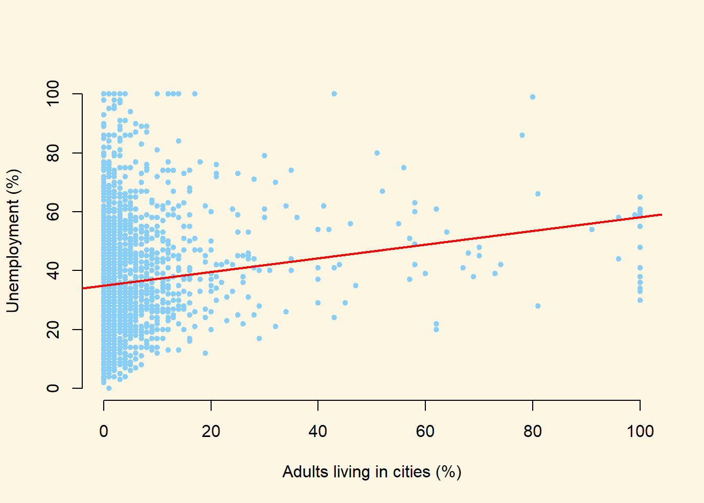
So we now have two models! Often, we will want to compare two estimated models side-by-side. We might want to say how the coefficients for the independent variables we included differ in model1 and model2, for example. Or we may want to ask: Does model2 offer a better fit than model1?
It is often useful to print the salient details from the estimated models side-by-side. We can do this by using the screenreg() function.
screenreg(list(model1, model2))
======================================
Model 1 Model 2
--------------------------------------
(Intercept) 7.90 *** 35.02 ***
(0.65) (0.49)
PctNotHSGrad 0.74 ***
(0.01)
population 0.23 ***
(0.04)
--------------------------------------
R^2 0.55 0.02
Adj. R^2 0.55 0.02
Num. obs. 1994 1994
RMSE 13.52 20.01
======================================
*** p < 0.001, ** p < 0.01, * p < 0.05What does this table tell us?
- The first column replicates the results from our first model. We can see that a one point increase in the percentage of citizens without high-school education is associated with an increase of 0.7423853 percentage points of unemployment, on average.
- The second column gives us the results from the second model. Here, a one point increase in the percentage of citizens who live in cities is associated with an increase of 0.2313906 percentage points of unemployment, on average
- We can also compare the \(R^2\) values from the two models. The \(R^2\) for
model1is 0.5529732 and formodel2is 0.0210968. This suggests that the model withPctNotHSGradas the explanatory variable explains about 55.2973193% of the variation in unemployment. The model withpopulationas the explanatory variable, on the other hand, explains just 2.1096753% of the variation in unemployment.
Finally, and this is something that might help with your coursework, let’s save the same output as a Microsoft Word document using htmlreg().
htmlreg(list(model1, model2), file = "regression_model.doc")If you’re using a Mac, you might want to save the file as .html if the Word document isn’t formatted correctly.
htmlreg(list(model1, model2), file = "regression_model.html")9.1.2 Fitted values
Once we have estimated a regression model, we can use that model to produce fitted values. Fitted values represent our “best guess” for the value of our dependent variable for a specific value of our independent variable.
Let’s calculate the fitted values manually and then we’ll show you how to do it in R. The fitted value formula is:
\[\hat{Y}_{i} = \hat{\beta}_0 + \hat{\beta}_1 * X_i\]
Let’s say that, on the basis of model1 we would like to know what the unemployment rate is likely to be for a community where the percentage of adults without a high-school education is equal to 10%. We can substitute in the relevant coefficients from model1 and the value for our X variable (10 in this case), and we get:
\[\hat{Y}_{i} = 7.9 + 0.74 * 10 = 15.3\]
To calculate fitted values in R, we use the predict() function.
The predict function takes two main arguments.
| Argument | Description |
|---|---|
object |
The object is the model object that we would like to use to produce fitted values. Here, we would like to base the analysis on model1 and so specify object = model1 here. |
newdata |
This is an optional argument which we use to specify the values of our independent variable(s) that we would like fitted values for. If we leave this argument empty, R will automatically calculate fitted values for all of the observations in the data that we used to estimate the original model. If we include this argument, we need to provide a data.frame which has a variable with the same name as the independent variable in our model. Here, we specify newdata = data.frame(PctNotHSGrad = 10), as we would like the fitted value for a community where 10% of adults did not complete high-school. |
predict(model1, newdata = data.frame(PctNotHSGrad = 10)) 1
15.31906 This is the same as the result we obtained when we calculated the fitted value manually. The good thing about the predict() function, however, is that we will be able to use it for all the models we study on this course, and it can be useful for calculating many different fitted values.
9.1.3 Additional Resources
9.1.4 Multiple linear regression models
we load the full standard (cross-sectional) dataset from the Quality of Government Institute (this is a newer version that the one we used earlier). This is a great data source for comparativist research. The codebook is available from their main website. You can also find time-series and cross-section data sets on this page.
The dataset is in csv format (.csv). Loading it requires the read.csv() function. Let’s load the data set.
world_data <- read.csv("http://uclspp.github.io/datasets/data/qog_std_cs_jan15.csv", stringsAsFactors = FALSE)Check the dimensions of the dataset
dim(world_data)[1] 193 2037The dataset contains 2037 variables but we’re only interested in the following:
| Variable | Description |
|---|---|
| wbgi_pse | A measure of political stability (larger values mean more stability) |
| lp_lat_abst | Distance to the equator or latitude |
| dr_ing | Index for the level of globalization |
| ti_cpi | Transparency International’s Corruptions Perceptions Index (larger values mean better quality institutions, i.e. less corruption) |
| br_dem | Factor variable stating whether the country is a democracy or not (with labels 1. Democracy and 0. Dictatorship) |
Our dependent variable (also called response or outcome variable) is wbgi_pse. We will rename the variables we care about to something meaningful.
CAUTION: When renaming variables, do not use spaces or special characters in the name. You can, however, use a period (.) or underscore (_) to make the names more readable.
names(world_data)[names(world_data) == "cname"] <- "country"
names(world_data)[names(world_data) == "wbgi_pse"] <- "pol_stability"
names(world_data)[names(world_data) == "lp_lat_abst"] <- "latitude"
names(world_data)[names(world_data) == "dr_ig"] <- "globalization"
names(world_data)[names(world_data) == "chga_demo"] <- "democracy"
names(world_data)[names(world_data) == "ti_cpi"] <- "inst_quality"Now Let’s look at some of these variables using the summary() function.
summary(world_data$pol_stability) Min. 1st Qu. Median Mean 3rd Qu. Max.
-3.10637 -0.72686 -0.01900 -0.06079 0.78486 1.57240 If you think about political stability, and how one could measure it, you know there is an order implicit in the measurement – more or less stability. From there, what you need to know is whether the more or less is ordinal or interval scaled. Checking pol_stability you see a range from roughly -3 to 1.6. The variable is numerical and has decimal places. This tells you that the variable is at least interval scaled. You will not see ordinally scaled variables with decimal places. Examine the summaries of the other variables and determine their level of measurement.
Now let’s look at the variables that we think can explain political stability. We can use the summary() function on more than one variable by combining their names in a vector.
summary(world_data[c('latitude', 'globalization', 'inst_quality', 'democracy')]) latitude globalization inst_quality democracy
Min. :0.0000 Min. :24.35 Min. :1.010 Length:193
1st Qu.:0.1444 1st Qu.:45.22 1st Qu.:2.400 Class :character
Median :0.2444 Median :54.99 Median :3.300 Mode :character
Mean :0.2865 Mean :57.15 Mean :3.988
3rd Qu.:0.4444 3rd Qu.:68.34 3rd Qu.:5.100
Max. :0.7222 Max. :92.30 Max. :9.300
NA's :12 NA's :12 NA's :12 The variables latitude, globalization and inst_quality have 12 missing values each marked as NA. democracy has 1 missing value. Missing values could cause trouble because operations including an NA will produce NA as a result (e.g.: 1 + NA = NA). We will drop these missing values from our data set using the is.na() function and square brackets. The exlamation mark in front of is.na() means “not”. So, we keep all rows that are not NA’s on the variable latitude.
world_data <- world_data[ !is.na(world_data$latitude), ]Generally, we want to make sure we drop missing values only from variables that we care about. Now that you have seen how to do this, drop missings from globalization, inst_quality, and democracy yourself.
world_data <- world_data[ !is.na(world_data$globalization), ]
world_data <- world_data[ !is.na(world_data$inst_quality), ]
world_data <- world_data[ !is.na(world_data$democracy), ]Let’s check the range of the variable latitude from our summary above. It is between 0 and 1. The codebook clarifies that the latitude of a country’s capital has been divided by 90 to get a variable that ranges from 0 to 1. This would make interpretation difficult. When interpreting the effect of such a variable a unit change (a change of 1) covers the entire range or put differently, it is a change from a country at the equator to a country at one of the poles.
We therefore multiply by 90 again. This will turn the units of the latitude variable into degrees again which makes interpretation easier.
world_data$latitude <- world_data$latitude * 909.1.5 Estimating a Bivariate Regression
Is there a correlation between the distance of a country to the equator and the level of political stability? Both political stability (dependent variable) and distance to the equator (independent variable) are continuous. Therefore, we will get an idea about the relationship using a scatter plot.
plot(x = world_data$latitude,
y = world_data$pol_stability,
frame.plot = FALSE,
pch = 20,
xlab = "Latitude",
ylab = "Political Stability")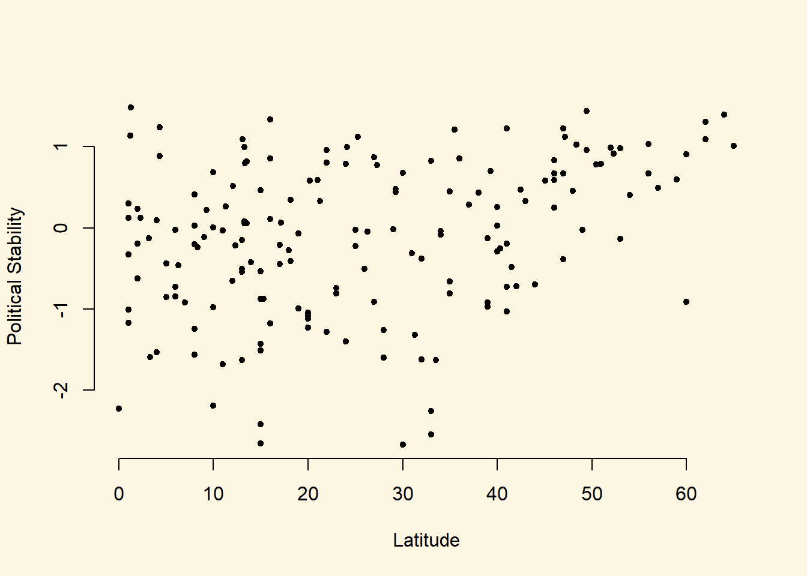
Looking at the cloud of points suggests that there might be a positive relationship: increases in our independent variable latitude appear to be associated with increases in the dependent variable pol_stability (the further from the equator, the more stable).
We can fit a line of best fit through the points. To do this we must estimate the bivariate regression model with the lm() function.
latitude_model <- lm(pol_stability ~ latitude, data = world_data)Now we can create a scatterplot with a regression line using the abline() function.
plot(x = world_data$latitude,
y = world_data$pol_stability,
frame.plot = FALSE,
pch = 20,
xlab = "Latitude",
ylab = "Political Stability")
abline(latitude_model, col = "red")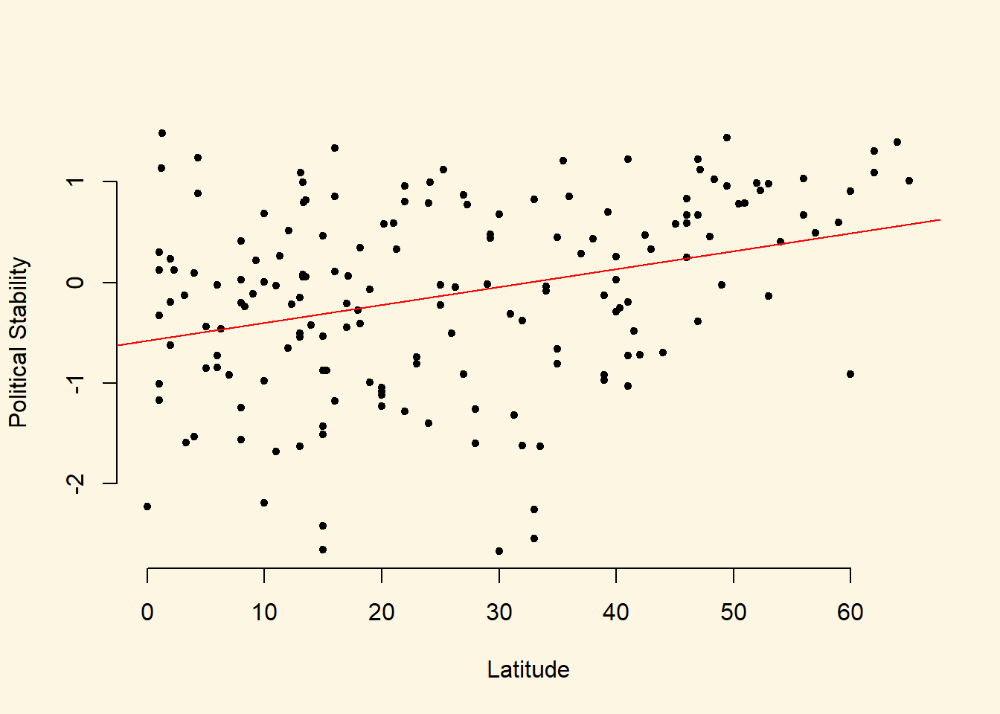
We can also view a simple summary of the regression by using the screenreg function:
screenreg(latitude_model)
=======================
Model 1
-----------------------
(Intercept) -0.58 ***
(0.12)
latitude 0.02 ***
(0.00)
-----------------------
R^2 0.11
Adj. R^2 0.10
Num. obs. 170
RMSE 0.89
=======================
*** p < 0.001, ** p < 0.01, * p < 0.05Thinking back to earlier today, how do we interpret this regression?
- The coefficient for the variable
latitude(\(\beta_1\)) indicates that a one-unit increase in a country’s latitude is associated with a 0.0178378 increase in the measure of political stability, on average. Question: Is this association statistically significant at the 95% confidence level? - The coefficient for the
(intercept)term (\(\beta_0\)) indicates that the average level of political stability for a country with a latitude of 0 is -0.580075 (wherelatitude = 0is a country positioned at the equator) - The \(R^2\) of the model is 0.1065267. This implies that 11% of the variation in the dependent variable (political stability) is explained by the independent variable (latitude) in the model.
The regression above suggests that there is a significant association between these variables However, as good social scientistis, we probably do not think that the distance of a country from the equator is a theoretically relevant variable for explaining political stability. This is because there is no plausible causal link between the two. We should therefore consider other variables to include in our model.
We will include the index of globalization (higher values mean more integration with the rest of the world), the quality of institutions, and the indicator for whether the country is a democracy. For all of these variables we can come up with a theoretical story for their effect on political stability.
To specify a multiple linear regression model, the only thing we need to change is the formula argument of the lm() function. In particular, if we wish to add additional explanatory variables, the formula argument will take the following form:
dependent.var ~ independent.var.1 + independent.var.2 + independent.var.3 ...In our example here, the model would therefore look like the following:
inst_model <- lm(
pol_stability ~ latitude + globalization + inst_quality + democracy,
data = world_data
)Remember, pol_stability is our dependent variable, as before, and now we have four independent variables: latitude, globalization, democracy and inst_quality. Again, just as with the bivariate model, we can view the summarised output of the regression by using screenreg(). As we now have two models (a simple regression model, and a multiple regression model), we can join them together using the list() function, and then put all of that inside screenreg().
screenreg(list(latitude_model, inst_model))
=============================================
Model 1 Model 2
---------------------------------------------
(Intercept) -0.58 *** -1.25 ***
(0.12) (0.20)
latitude 0.02 *** 0.00
(0.00) (0.00)
globalization -0.00
(0.01)
inst_quality 0.34 ***
(0.04)
democracy1. Democracy 0.04
(0.11)
---------------------------------------------
R^2 0.11 0.50
Adj. R^2 0.10 0.49
Num. obs. 170 170
RMSE 0.89 0.67
=============================================
*** p < 0.001, ** p < 0.01, * p < 0.05Including the two new predictors leads to substantial changes.
- First, we now explain 50% of the variance of our dependent variable instead of just 11%.
- Second, the effect of the distance to the equator is no longer significant.
- Third, better quality institutions are associated with more political stability. In particular, a one-unit increase in the measure of instituion quality (which ranges from 1 to 10) is associated with a 0.338882 increase in the measure for political stability.
- Fourth, there is no significant relationship between globalization and political stability in this data.
- Fifth, there is no significant relationship between democracy and political stability in this data.
### Predicting outcome conditional on institutional quality
Just as we did with the simple regression model last week, we can use the fitted model object to calculate the fitted values of our dependent variable for different values of our explanatory variables. To do so, we again use the predict() function.
We proceed in three steps.
- We set the values of the covariates for which we would like to produce fitted values.
- You will need to set covariate values for every explanatory variable that you included in your model.
- As only one of our variables has a significant relationship with the outcome in the multiple regression model that we estimated above, we are really only interested in that variable (
inst_quality). - Therefore, we will calculate fitted values over the range of
inst_quality, while setting the values oflatitudeandglobalizationto their mean values. - As
democracyis a factor variable, we cannot use the mean value. Instead, we will setdemocracyto be equal to"1. Democracy"which is the label for democratic countries
- We calculate the fitted values.
- We report the results (here we will produce a plot).
For step one, the following code produces a data.frame of new covariate values for which we would like to calculate a fitted value from our model:
democracies <- data.frame(
inst_quality = seq(from = 1.4, to = 9.3, by = 1),
globalization = mean(world_data$globalization),
latitude = mean(world_data$latitude),
democracy = "1. Democracy"
)We’ve just created a data.frame of hypothetical democracies with varying level of institutional quality. Let’s see what this data.frame looks like.
democracies inst_quality globalization latitude democracy
1 1.4 57.93053 25.78218 1. Democracy
2 2.4 57.93053 25.78218 1. Democracy
3 3.4 57.93053 25.78218 1. Democracy
4 4.4 57.93053 25.78218 1. Democracy
5 5.4 57.93053 25.78218 1. Democracy
6 6.4 57.93053 25.78218 1. Democracy
7 7.4 57.93053 25.78218 1. Democracy
8 8.4 57.93053 25.78218 1. DemocracyIn this data.frame, we have set the inst_quality variable to vary between 1.4 and 9.3000002, with increments of 1 unit which represents the range of inst_quality in our dataset.
min(world_data$inst_quality)[1] 1.4max(world_data$inst_quality)[1] 9.3We have set globalization to be equal to the mean value of globalization in the world_data object, and latitude to be equal to the mean value of latitude in the world_data object. Finally, we have set democracy to be equal to "1. Democracy" (the value for democratic countries).
We can now calculate the fitted values for each of these combinations of our explanatory variables using the predict() function.
democracies$predicted_pol_stability <- predict(inst_model, newdata = democracies)We can now look again at the democracies object:
democracies inst_quality globalization latitude democracy predicted_pol_stability
1 1.4 57.93053 25.78218 1. Democracy -1.00319887
2 2.4 57.93053 25.78218 1. Democracy -0.66431685
3 3.4 57.93053 25.78218 1. Democracy -0.32543483
4 4.4 57.93053 25.78218 1. Democracy 0.01344719
5 5.4 57.93053 25.78218 1. Democracy 0.35232921
6 6.4 57.93053 25.78218 1. Democracy 0.69121123
7 7.4 57.93053 25.78218 1. Democracy 1.03009325
8 8.4 57.93053 25.78218 1. Democracy 1.36897527Hey presto! Now, for each of our explanatory variable combinations, we have the corresponding fitted values as calculated from our estimated regression.
Finally, we can plot these values:
plot(
x = democracies$inst_quality,
y = democracies$predicted_pol_stability,
frame.plot = FALSE,
col = "blue",
type = "l",
xlab = "Institution Quality",
ylab = "Fitted value for political stability"
)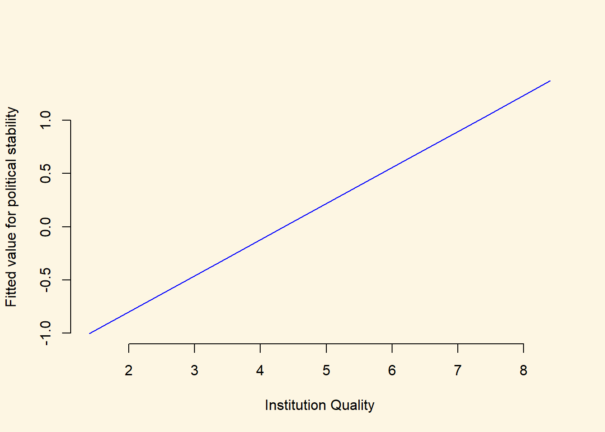
We could also use the output from our model to plot two separate lines of fitted values: one for democracies, and one for dictatorships. We have already done this for democracies, so the following code constructs a data.frame of fitted values for dictatorships:
dictatorships <- data.frame(
inst_quality = seq(from = 1.4, to = 9.3, by = 1),
globalization = mean(world_data$globalization),
latitude = mean(world_data$latitude),
democracy = "0. Dictatorship"
)
dictatorships$predicted_pol_stability <- predict(inst_model, newdata = dictatorships)Now that we have calculated these fitted values, we can add the line for dictatorships to the plot we created above using the lines() function:
plot(
x = democracies$inst_quality,
y = democracies$predicted_pol_stability,
frame.plot = FALSE,
col = "blue",
type = "l",
xlab = "Institution Quality",
ylab = "Fitted value for political stability"
)
lines(x = dictatorships$inst_quality,
y = dictatorships$predicted_pol_stability,
data = dictatorships,
col = "red")Warning in plot.xy(xy.coords(x, y), type = type, ...): "data" is not a
graphical parameter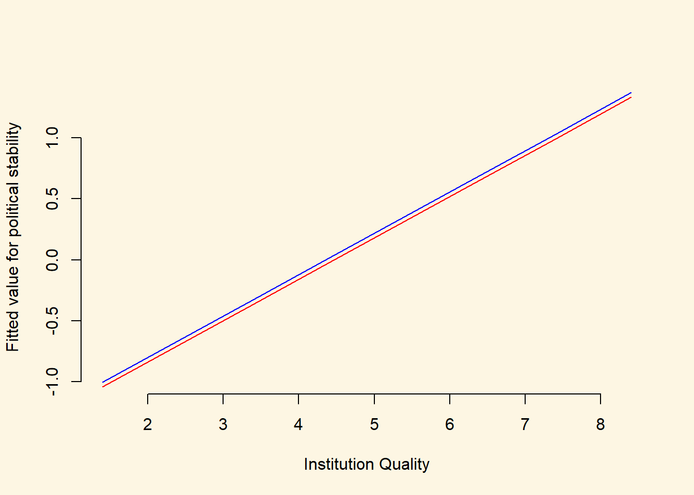
We can see from the plot that the fitted values for democracies (blue line) are almost exactly the same as those for dictatorships (red line). This is reassuring, as the estimated coefficient on the democracy variable was very small (0.04) and was not statistically significantly different from 0. Often, however, it can be very illuminating to construct plots like this where we construct a line to indicate how our predicted values for Y vary across one of our explanatory variables (here, institution quality), and we create different lines for different values of another explanatory variable (here, democracy/dictatorship).
9.1.6 Non-Linearities
Let’s clear our workspace for now to keep the workspace tidy and to prevent our computer from slowing down.
rm(list = ls())We will use the small version of the Quality of Government data from 2012 again (QoG2012.csv) with four variables:
| Variable | Description |
|---|---|
former_col |
0 = not a former colony 1 = former colony |
undp_hdi |
UNDP Human Development Index. Higher values mean better quality of life |
wbgi_cce |
Control of corruption. Higher values mean better control of corruption |
wdi_gdpc |
GDP per capita in US dollars |
world_data <- read.csv("QoG2012.csv")
names(world_data)[1] "h_j" "wdi_gdpc" "undp_hdi" "wbgi_cce" "wbgi_pse"
[6] "former_col" "lp_lat_abst"Rename the variables by yourself to:
| New Name | Old Name |
|---|---|
human_development |
undp_hdi |
institutions_quality |
wbgi_cce |
gdp_capita |
wdi_gdpc |
names(world_data)[1] "h_j" "wdi_gdpc" "undp_hdi" "wbgi_cce" "wbgi_pse"
[6] "former_col" "lp_lat_abst"names(world_data)[names(world_data)=="undp_hdi"] <- "human_development"
names(world_data)[names(world_data)=="wbgi_cce"] <- "institutions_quality"
names(world_data)[names(world_data)=="wdi_gdpc"] <- "gdp_capita"
names(world_data)[1] "h_j" "gdp_capita" "human_development"
[4] "institutions_quality" "wbgi_pse" "former_col"
[7] "lp_lat_abst" Now let’s look at the summary statistics for the entire data set.
summary(world_data) h_j gdp_capita human_development institutions_quality
Min. :0.0000 Min. : 226.2 Min. :0.2730 Min. :-1.69953
1st Qu.:0.0000 1st Qu.: 1768.0 1st Qu.:0.5390 1st Qu.:-0.81965
Median :0.0000 Median : 5326.1 Median :0.7510 Median :-0.30476
Mean :0.3787 Mean :10184.1 Mean :0.6982 Mean :-0.05072
3rd Qu.:1.0000 3rd Qu.:12976.5 3rd Qu.:0.8335 3rd Qu.: 0.50649
Max. :1.0000 Max. :63686.7 Max. :0.9560 Max. : 2.44565
NA's :25 NA's :16 NA's :19 NA's :2
wbgi_pse former_col lp_lat_abst
Min. :-2.46746 Min. :0.0000 Min. :0.0000
1st Qu.:-0.72900 1st Qu.:0.0000 1st Qu.:0.1343
Median : 0.02772 Median :1.0000 Median :0.2444
Mean :-0.03957 Mean :0.6289 Mean :0.2829
3rd Qu.: 0.79847 3rd Qu.:1.0000 3rd Qu.:0.4444
Max. : 1.67561 Max. :1.0000 Max. :0.7222
NA's :7 We need to remove missing values from gdp_capita, human_development, and institutions_quality. Do so yourself. Do not drop observations that missing values on other observations such as lp_lat_abst. We might throw away useful information when doing so.
world_data <- world_data[ !is.na(world_data$gdp_capita), ]
world_data <- world_data[ !is.na(world_data$human_development), ]
world_data <- world_data[ !is.na(world_data$institutions_quality), ]Let’s suppose we want to illustrate the relationship between GDP per capita and the human development index. We draw a scatter plot to investigate the relationship between the quality of life (hdi) and wealth (gdp/captia).
plot(
x = world_data$gdp_capita,
y = world_data$human_development,
data = world_data,
pch = 20,
frame.plot = FALSE,
col = "grey",
main = "Relationship between the quality of life and wealth",
ylab = "Human development index",
xlab = "GDP per capita"
)Warning in plot.window(...): "data" is not a graphical parameterWarning in plot.xy(xy, type, ...): "data" is not a graphical parameterWarning in axis(side = side, at = at, labels = labels, ...): "data" is not
a graphical parameter
Warning in axis(side = side, at = at, labels = labels, ...): "data" is not
a graphical parameterWarning in title(...): "data" is not a graphical parameter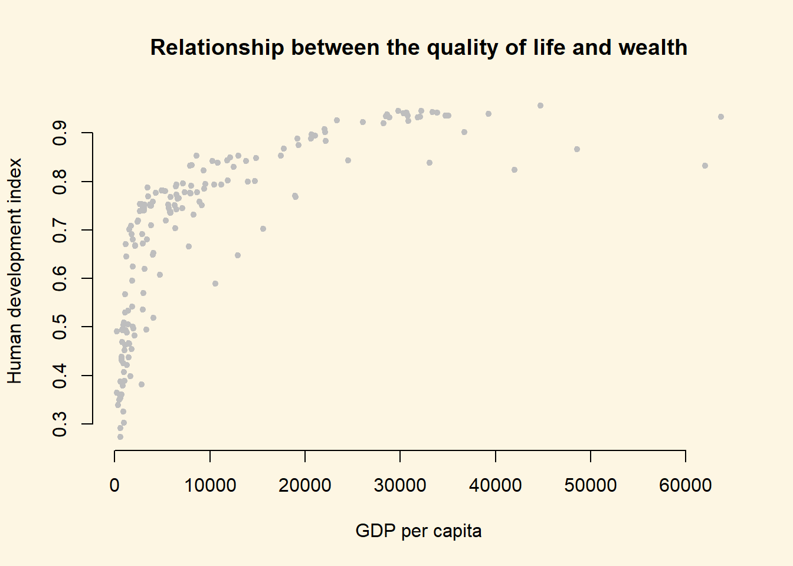
It’s easy to see, that the relationship between GDP per captia and the Human Development Index is not linear. Increases in wealth rapidly increase the quality of life in poor societies. The richer the country, the less pronounced the effect of additional wealth. We would mis-specify our model if we do not take the non-linear relationship into account.
Let’s go ahead and fit a mis-specified model:
linear.model <- lm(human_development ~ gdp_capita, data = world_data)
screenreg(linear.model)
=======================
Model 1
-----------------------
(Intercept) 0.59 ***
(0.01)
gdp_capita 0.00 ***
(0.00)
-----------------------
R^2 0.49
Adj. R^2 0.49
Num. obs. 172
RMSE 0.13
=======================
*** p < 0.001, ** p < 0.01, * p < 0.05We detect a significant linear relationship. The effect may look small because the coefficient rounded to two digits is zero. But remember, this is the effect of increasing GDP/capita by \(1\) US dollar on the quality of life. That effect is naturally small but it is probably not small when we increase wealth by \(1000\) US dollars.
However, our model would also entail that for every increase in GDP/capita, the quality of life increases on average by the same amount. We saw from our plot that this is not the case. The effect of GDP/capita on the quality of life is conditional on the level of GDP/capita. If that sounds like an interaction to you, then that is great because, we will model the non-linearity by raising the GDP/capita to a higher power. That is in effect an interaction of the variable with itself. GDP/capita raised to the second power, e.g. is GDP/capita * GDP/capita.
9.1.6.1 Polynomials
We know from school that polynomials like \(X^2\), \(X^3\) and so on are not linear. The relationship depicted in our plot above suggests a quadratic relationship between GDP per capita and the human development index might be appropriate (there is only one obvious “bend” in the data). To incorporate this intuition into our model, we will use the poly() function in our linear model to raise GDP/capita to the second power like so: poly(gdp_capita, degree = 2).
quadratic.model <- lm(
human_development ~ poly(gdp_capita, degree = 2),
data = world_data
)
screenreg(
list(linear.model, quadratic.model),
custom.model.names = c("Linear model", "Quadratic model")
)
============================================================
Linear model Quadratic model
------------------------------------------------------------
(Intercept) 0.59 *** 0.70 ***
(0.01) (0.01)
gdp_capita 0.00 ***
(0.00)
poly(gdp_capita, degree = 2)1 1.66 ***
(0.10)
poly(gdp_capita, degree = 2)2 -1.00 ***
(0.10)
------------------------------------------------------------
R^2 0.49 0.67
Adj. R^2 0.49 0.66
Num. obs. 172 172
RMSE 0.13 0.10
============================================================
*** p < 0.001, ** p < 0.01, * p < 0.05It is important to note, that in the quadratic model the effect of GDP/capita is no longer easy to interpret. We cannot say for every increase in GDP/capita by one dollar, the quality of life increases on average by some fixed amount. This is because the effect of GDP/capita depends on how rich a country was to begin with. We can, however, interpret the statitical significance of the quadratic term: the coefficient is about 10 times as large in absolute terms as the standard error, meaning we can easily reject the null hypothesis that the relationship between GDP and the HDI is linear. Furthermore, it looks like our model that includes the quadratic term has a much better fit, as the adjusted \(R^2\) has increased by a lot.
We can interpret the effect of wealth (GDP/capita) on the quality of life (human development index) by predicting the fitted values of the human development index given a certain level of GDP/capita. We will vary GDP/captia from its minimum in the data to its maximum and the plot the results which is a good way to illustrate a non-linear relationship.
Step 1: We find the minimum and maximum values of GDP/capita.
range(world_data$gdp_capita)[1] 226.235 63686.676Step 2: We predict fitted values for varying levels of GDP/captia (let’s create 100 predictions).
We create our sequence of 100 GDP/capita values
gdp_seq <- seq(from = 226, to = 63686, length.out = 100)We set our covariate values (here we only have one covariate: GDP/captia)
x <- data.frame(gdp_capita = gdp_seq)We predict the outcome (human development index) for each of the 100 GDP levels
y_hat <- predict(quadratic.model, newdata = x)Step 3: Now that we have created our predictions. We plot again and then we add the linear.model using abline and we add our non-linear version quadratic.model using the lines() function.
plot(
x = world_data$gdp_capita,
y = world_data$human_development,
data = world_data,
pch = 20,
frame.plot = FALSE,
col = "grey",
main = "Relationship between the quality of life and wealth",
ylab = "Human development index",
xlab = "GDP per capita"
)Warning in plot.window(...): "data" is not a graphical parameterWarning in plot.xy(xy, type, ...): "data" is not a graphical parameterWarning in axis(side = side, at = at, labels = labels, ...): "data" is not
a graphical parameter
Warning in axis(side = side, at = at, labels = labels, ...): "data" is not
a graphical parameterWarning in title(...): "data" is not a graphical parameter# the linear model
abline(linear.model, col = "black")
# better model
lines(x = gdp_seq, y = y_hat, col = "red")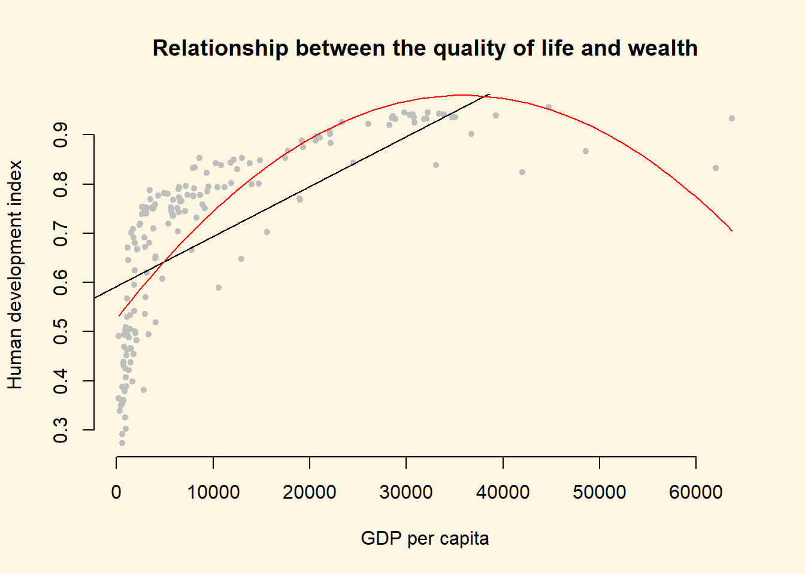
We could go further than this quadratic specification, and instead estimate a cubic.model with GDP/capita raised to the power of three. Do this now and present your results visually.
Estimate cubic model
cubic.model <- lm(human_development ~ poly(gdp_capita, 3), data = world_data)We predict the outcome (human development index) for each of the 100 GDP levels
y_hat2 <- predict(cubic.model, newdata = x)Next, we plot the linear and quadratic models
plot(
x = world_data$gdp_capita,
y = world_data$human_development,
data = world_data,
pch = 20,
frame.plot = FALSE,
col = "grey",
main = "Relationship between the quality of life and wealth",
ylab = "Human development index",
xlab = "GDP per capita"
)Warning in plot.window(...): "data" is not a graphical parameterWarning in plot.xy(xy, type, ...): "data" is not a graphical parameterWarning in axis(side = side, at = at, labels = labels, ...): "data" is not
a graphical parameter
Warning in axis(side = side, at = at, labels = labels, ...): "data" is not
a graphical parameterWarning in title(...): "data" is not a graphical parameter# the linear model
abline(linear.model, col = "black")
# quadratic model
lines(x = gdp_seq, y = y_hat, col = "red")
# cubic model
lines(x = gdp_seq, y = y_hat2, col = "green")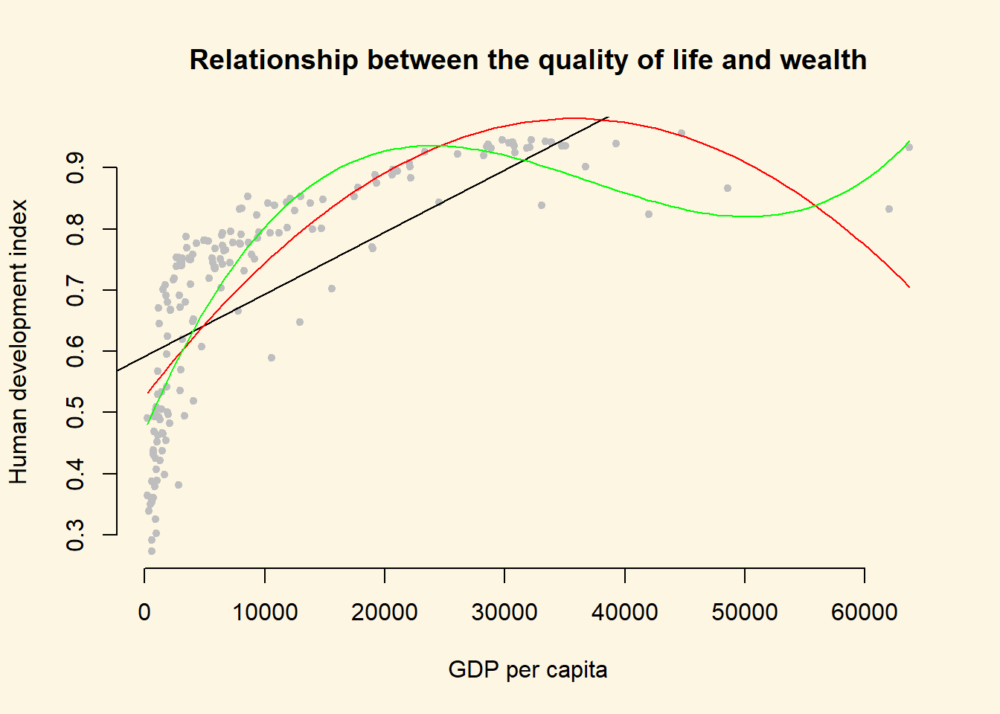
The cubic model provides a similar story to the quadratic model (the relationship between GDP/capita and HDI is steep at first, and then flatter at the higher levels of GDP/captia), but it looks somewhat strange, particularly at the higher levels of GDP/capita. In particular, it seems that the few extreme X values are causing a strange shape: the cubic is being wagged around by its tail. This is a common problem with polynomial regression models, and so we will now consider an alternative.
9.1.6.2 Log-transformations
Many non-linear relationships actually do look linear on the log scale. We can illustrate this by taking the natural logarithm of GDP/captia and plot the relationship between quality of life and our transformed GDP variable.
Note: Some of you will remember from your school calculators that you have an ln button and a log button where ln takes the natural logarithm and log takes the logarithm with base 10. The natural logarithm represents relations that occur frequently in the world and R takes the natural logarithm with the log() function by default.
Below, we plot the same plot from before but we wrap gdp_capita in the log() function which log-transforms the variable.
plot(
x = log(world_data$gdp_capita),
y = world_data$human_development,
data = world_data,
pch = 20,
frame.plot = FALSE,
col = "grey",
main = "Relationship between the quality of life and wealth on the log scale",
ylab = "Human development index",
xlab = "Logged gdp/capita"
)Warning in plot.window(...): "data" is not a graphical parameterWarning in plot.xy(xy, type, ...): "data" is not a graphical parameterWarning in axis(side = side, at = at, labels = labels, ...): "data" is not
a graphical parameter
Warning in axis(side = side, at = at, labels = labels, ...): "data" is not
a graphical parameterWarning in title(...): "data" is not a graphical parameter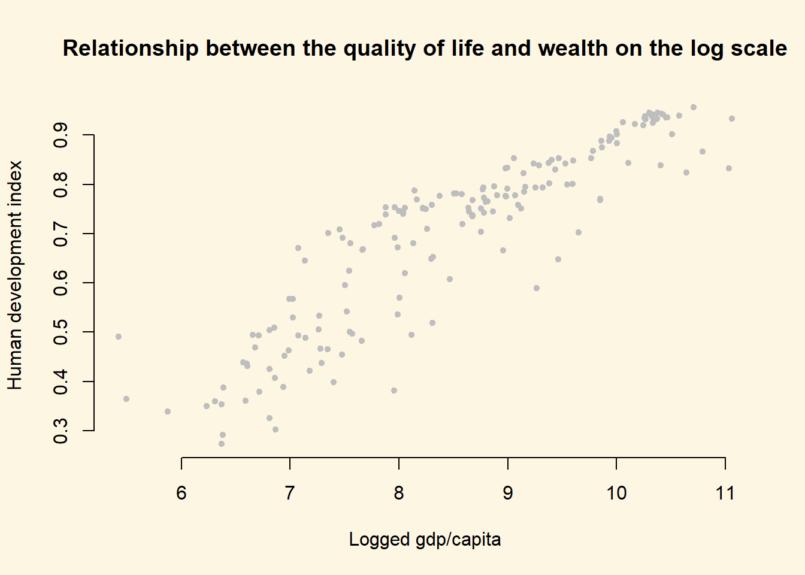
As you can see, the relationship now looks much closer to linear and we get the best fit to the data (as measured by adjusted \(R^2\)) if we run our model with log-transformed gdp.
log.model <- lm(human_development ~ log(gdp_capita), data = world_data)Let’s check our model
screenreg(
list(linear.model, quadratic.model, cubic.model, log.model),
custom.model.names = c("Linear Model", "Quadratic Model", "Cubic Model", "Log Model")
)
=====================================================================================
Linear Model Quadratic Model Cubic Model Log Model
-------------------------------------------------------------------------------------
(Intercept) 0.59 *** 0.70 *** 0.70 *** -0.36 ***
(0.01) (0.01) (0.01) (0.04)
gdp_capita 0.00 ***
(0.00)
poly(gdp_capita, degree = 2)1 1.66 ***
(0.10)
poly(gdp_capita, degree = 2)2 -1.00 ***
(0.10)
poly(gdp_capita, 3)1 1.66 ***
(0.09)
poly(gdp_capita, 3)2 -1.00 ***
(0.09)
poly(gdp_capita, 3)3 0.65 ***
(0.09)
log(gdp_capita) 0.12 ***
(0.00)
-------------------------------------------------------------------------------------
R^2 0.49 0.67 0.74 0.81
Adj. R^2 0.49 0.66 0.74 0.81
Num. obs. 172 172 172 172
RMSE 0.13 0.10 0.09 0.08
=====================================================================================
*** p < 0.001, ** p < 0.01, * p < 0.05Polynomials can be useful for modelling non-linearities. However, for each additional polynomial term we add, we also add an additional parameter that needs to be estimated. This reduces the degrees of freedom of the model. If we can get a linear relationship on the log scale, one advantage is that we use the same number of parameters as in the original linear model.
Furthermore, we gain interpretability. The relationship is linear on the log scale of gdp/capita. This means we can interpret the effect of gdp/captia as: For an increase of gdp/captia by one percent, the quality of life increases by \(\frac{\hat{\beta}}{100} = \frac{0.12}{100}\) points on average. The effect is very large because human_development only varies from \(0\) to \(1\).
The adjusted \(R^2\) also suggests that the log model provides the best fit to the data. To illustrate that this is the case, we return to our plot and show the model fit graphically.
Get the fitted values for the log model.
y_hat3 <- predict(log.model, newdata = x)Create a plot showing the fitted values
plot(
x = world_data$gdp_capita,
y = world_data$human_development,
data = world_data,
pch = 20,
frame.plot = FALSE,
col = "grey",
main = "Relationship between the quality of life and wealth",
ylab = "Human development index",
xlab = "GDP per capita"
)Warning in plot.window(...): "data" is not a graphical parameterWarning in plot.xy(xy, type, ...): "data" is not a graphical parameterWarning in axis(side = side, at = at, labels = labels, ...): "data" is not
a graphical parameter
Warning in axis(side = side, at = at, labels = labels, ...): "data" is not
a graphical parameterWarning in title(...): "data" is not a graphical parameter# Linear model
abline(linear.model, col = "black")
# Quadratic model
lines(x = gdp_seq, y = y_hat, col = "red")
# Cubic model
lines(x = gdp_seq, y = y_hat2, col = "green")
# Log model
lines(x = gdp_seq, y = y_hat3, col = "blue")
# Add a legend
legend("bottomright",
legend = c("Linear", "Quadratic", "Cubic", "Log"),
lty = 1,
col = c("black", "red", "green", "blue")
)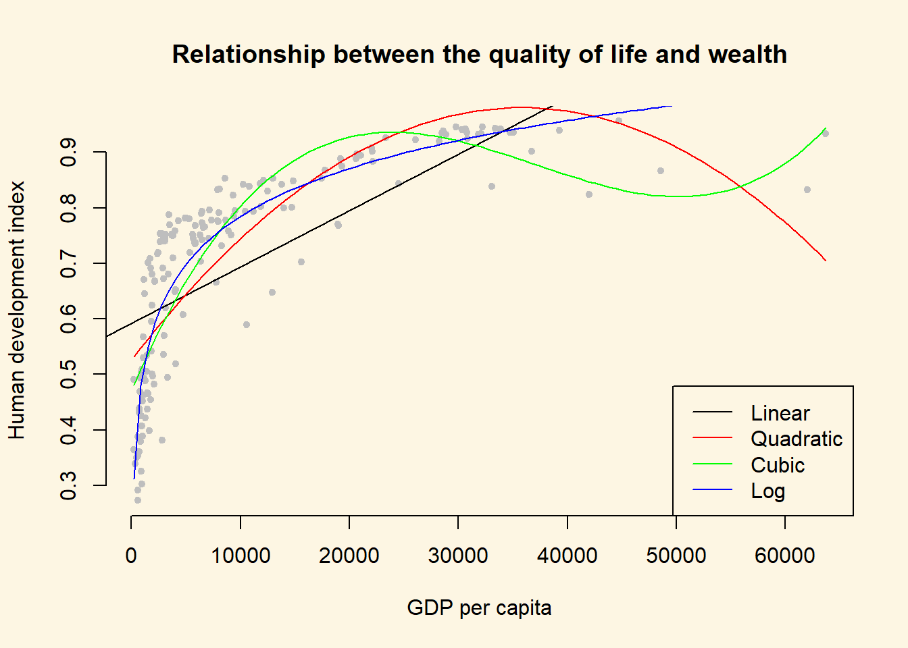
The blue line shows the log-transformed model. It clearly fits the data best.